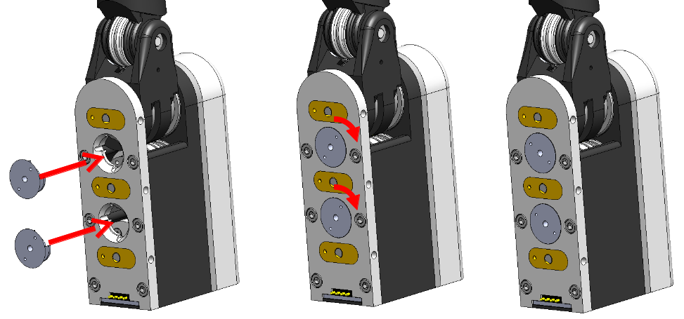

Mechanical Fuse
The fingers are attached to the hand frame via a mechanical fuse. The idea is that if an irresistible force is driving the finger into an immovable object, the fuse will release the finger from the hand frame before its links fail catastrophically.
In the current version of the Sandia Hand, the fuse is a conical aluminum nut with small "wings" that lock into the front of the finger module. Finger modules are attached to hand frames with pairs of screws that pass through the hand frame and into the conical nuts on the front of the finger modules.
The conical nuts were already installed during manufacturing as part of the finger test and burn-in process. However, should one of them fail, the following diagram shows how they are installed. Note that effort should first be spent to ensure that all fragments of the failed nut have been removed from the finger module by shaking it around in various orientations.
